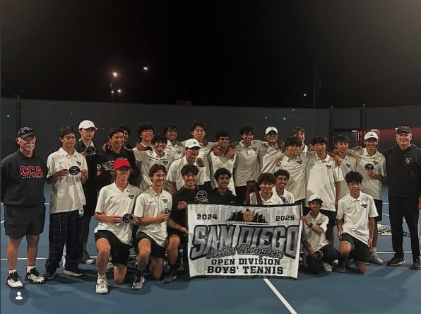
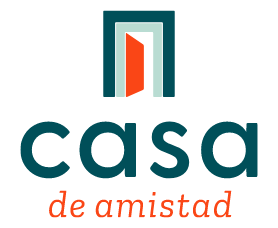
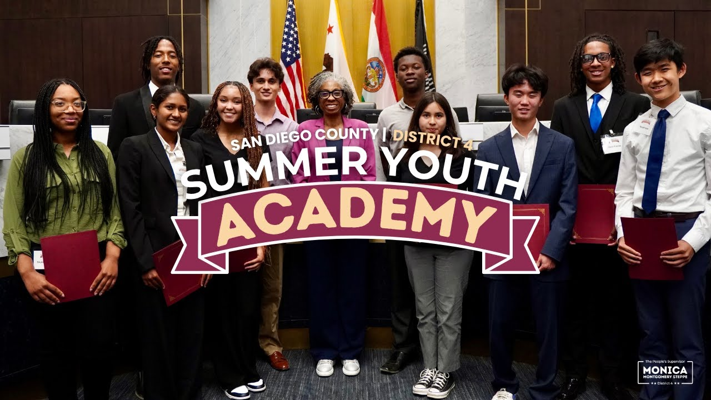

Junior at CCA - Computer Science
My name is Nevinh Do and I am a junior at CCA studying Computer Science.

In my free time, I enjoy playing and watching sports. When I was in elementary school, I learned how to play basketball. Although I quit basketball competitively, I still enjoy watching and playing with my friends. In middle school, I ran track and field and was able to win the championship with my team. I also played flag football in 5th grade, and although we weren't able to win the championship, we were able to get second place. Now, my main sport is tennis, and I am on the CCA varsity tennis team (CCA UTR Sports).

Since 9th grade, I have been volunteering at Casa De Amistad, a nonprofit that supports students facing academic challenges. As a tutor, I work with students who may struggle to focus or keep up in school. To keep them engaged, I play games like chess. My current student loves chess and during our breaks, we play together and we both enjoy it a lot. Through this experience, I've learned to be more patient and adapt my approach to fit each student's needs.
Casa De Amistad Website
My desire to make a bigger impact led me to intern with APAC and Supervisor Monica Montgomery Steppe last summer. In the two-week Summer Youth Academy, I learned how San Diego operates and focused on issues like homelessness. After hearing from organizations like Father Joe's Villages, my team developed a potential solution and presented it to District 4 staff. We also attended a homeless resource fair, which made the issue feel more real. Overall, the experience showed me how leadership can be used to address large-scale community challenges.
Father Joe's Villages